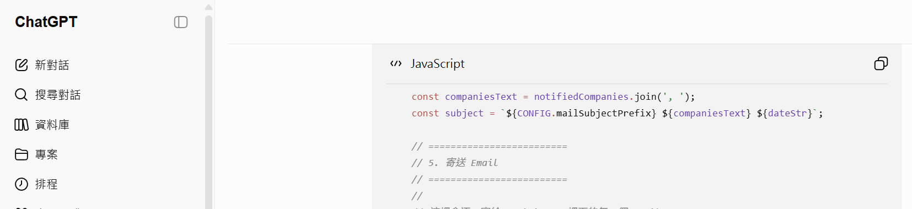
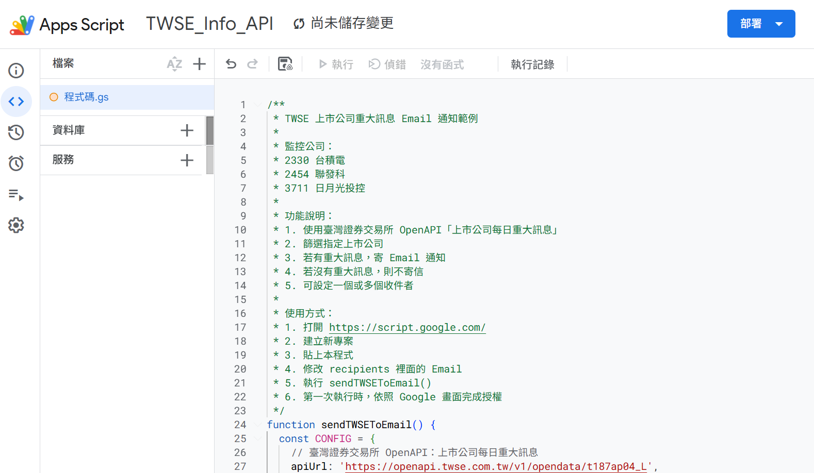
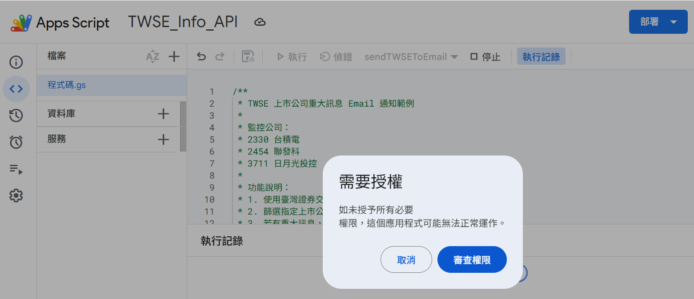
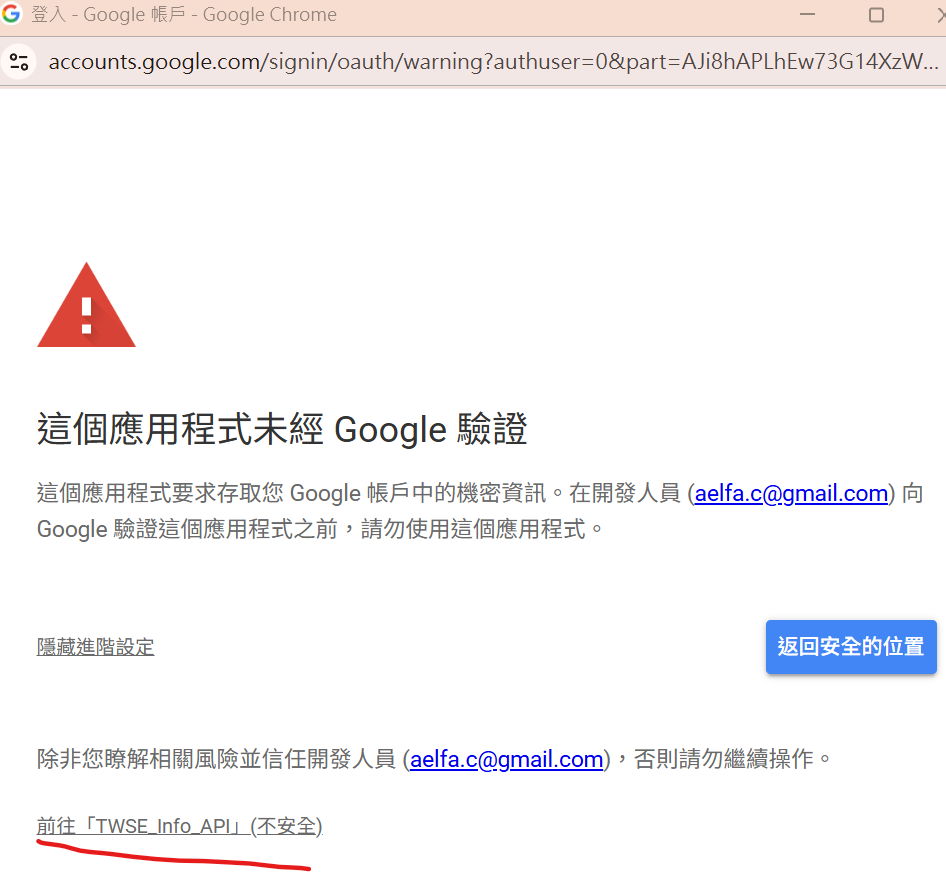
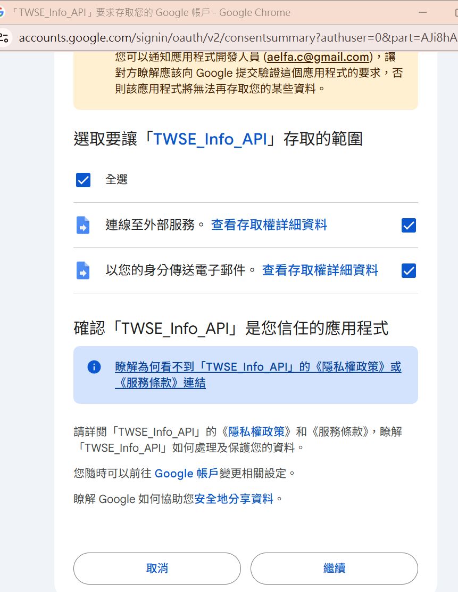
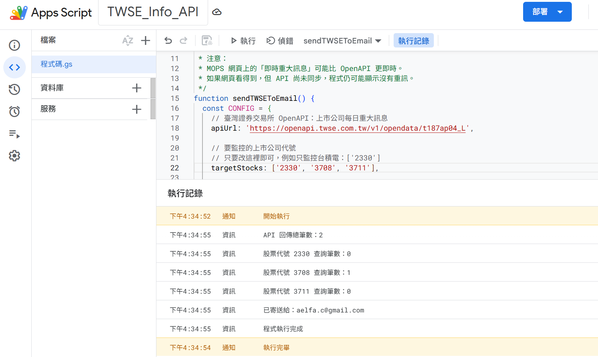

A beginner project becomes real when you complete the full loop: paste, authorize, run, verify, and improve.
1. Ask AI for reviewable code
State the official endpoint, company codes, recipients, whether a no-news test message should be sent, and how errors should appear. AI produces a draft—not a permission slip.

2. Paste the complete script
Create a project at Google Apps Script, replace the starter code, and set recipients to your own address. Use placeholders when publishing code.

sendTWSEToEmail appears in the function selector.3. Run once and review authorization
The first run requests permission because the script connects to an external API and sends email.

4. Treat the unverified-app warning as a real warning
A personal Apps Script that requests sensitive scopes may display an unverified-app warning. Continue only when the developer account is yours, the project is yours, the code is trusted, and every scope is expected. Return to safety for an unfamiliar shared project.

5. Match every scope to a function
This project requires access to external services for UrlFetchApp and permission to send email for MailApp. Unrelated Drive, contacts, or mailbox-reading scopes deserve investigation.

6. Verify through execution evidence
The real run reported two API records: 2330 matched zero, 3708 matched one, and 3711 matched zero. It then logged the recipient and successful completion.

A reusable test configuration
Use the complete program in the Chinese version or the same Apps Script from Day 09, replacing its configuration with the block below. The runtime code is language-independent; this configuration adds multiple companies, multiple recipients, and an explicit no-news test mode.
const CONFIG = {
apiUrl: 'https://openapi.twse.com.tw/v1/opendata/t187ap04_L',
targetStocks: ['2330', '3708', '3711'],
sendWhenNoNews: true, // change to false for normal use
recipients: ['your_email@gmail.com'],
mailSubjectPrefix: '[TWSE Material Information]'
};
// Before fetching:
// - use muteHttpExceptions and require HTTP 200
// - require an array JSON response
// - trim API field names with cleanObjectKeys
// Before sending:
// - validate recipient addresses
// - check MailApp.getRemainingDailyQuota()
// On error:
// - log the error and throw it again so the run is marked failedControls to add before daily scheduling
- Set
sendWhenNoNewstofalse. - Reuse Day 09's Script Properties deduplication so the same disclosure is not resent.
- Confirm market scope: this endpoint covers listed companies; OTC data needs the corresponding source.
- Allow for timing differences between MOPS pages and the OpenAPI feed.
- Remove real recipients before publishing and confirm mail quotas and privacy requirements.
From AI draft to the first verifiable notification
The user tests three codes, confirms that authorization includes only external connection and email sending, and runs the script. Code 3708 matches one disclosure; the log records the counts and sent email. The user then disables no-news test mail, adds deduplication, and connects the Day 10 schedule—turning one successful test into a sustainable workflow.
Captain's verdict
“Execution completed” is not the end. It is the first traceable entry in the ship's log. Knowing how to paste code is useful; understanding scopes, verifying outputs, recognizing limits, and preserving failure evidence is what turns an AI draft into your tool.